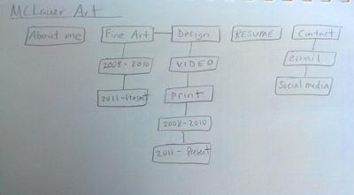
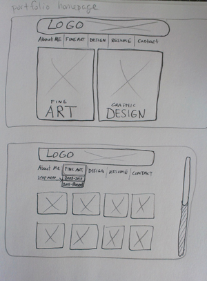
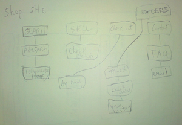
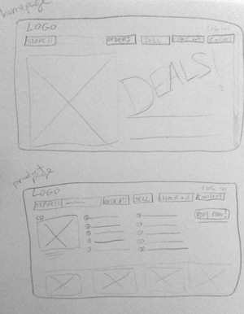

PORTFOLIO
potential employer
- Sarah from Barefoot Books
- referred to my site through my resumé
- wants to view my work & bio to see if I qualify for the job
- I help her out by placing the link to my work and “about me” section in the top nav bar; the portfolio page itself will have thumbnails of every work along with the ability to view it larger & read details about that specific project. The about me page will be brief and have a photo of myself.
former teacher/professor
- Rene from Durfee High School
- referred to my site from me/or business card
- wants to check out my work along with my resume to see what i’ve been up to
- I help him out by placing placing both the portfolio & resume links in the top nav bar. The portfolio page will have thumbnails and the resume page will be fully designed & clear rather than just a link to a downloadable PDF file.
regular visiter
- Sam, friend from back home
- previously bookmarked my site
- wants to see if I have any new art posted
- To help her sort out the new from the old in my portfolio page all of the recently added works will have a “new” tag next to them


SHOP
regular customer
- Will, age 30
- bookmarked the site
- wants to check the status of his order
- I help him out by having an “orders” link clearly visible in the top nav bar. On the orders page there will be the options to check the status of an open order or track, edit order, or view order history.
new customer
- Amy, age 16
- google searched “One Direction CD” and a link for their cd shows up from this shopping site so can buy it
- she wants to buy the C8D but isn’t sure
- to help her we bring her straight to the page of the CD, give samples of the CD, and have an emphasized “buy now!” button on the top right
seller
- John, age 23
- googled “sell books” and our site popped up
- wants to sell a college book
- To help him out we have a “sell” option in the top nav bar, next to “check out” and the sell page lets him sell anything he wants; all he needs is to fill out info about the product and post a picture of the product. Before saving we would give him the notice to create an account with us.

